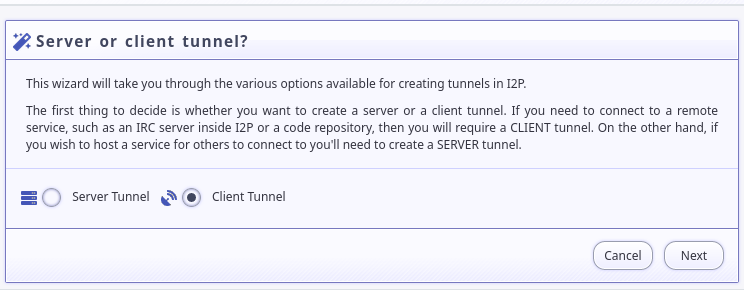
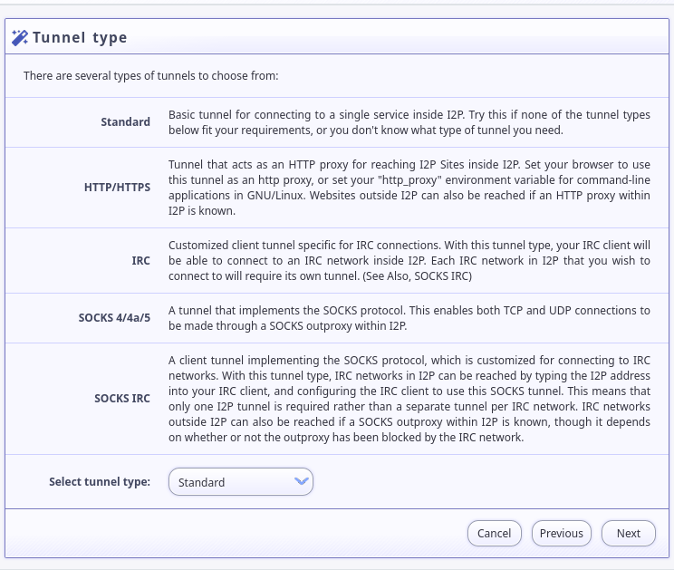
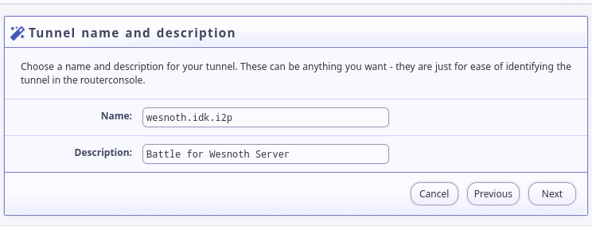
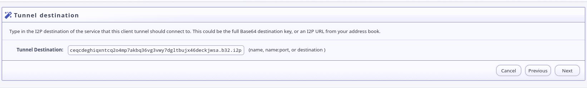
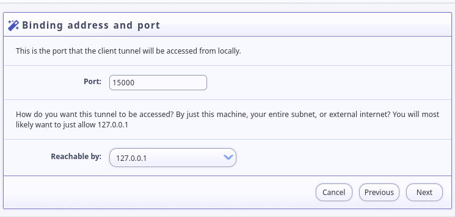
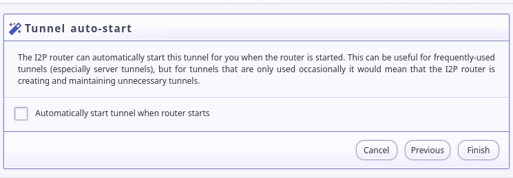
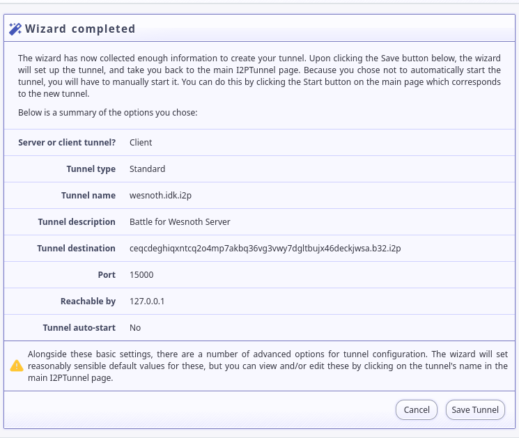

Running Battle for Wesnoth over I2P is possible using “Standard” streaming tunnels.
First, set up a client tunnel: 
Pick a “Standard” tunnel for your tunnel type: 
Set a tunnel name and description: 
Enter: ceqcdeghiqxntcq2o4mp7akbq36vg3vwy7dgltbujx46deckjwsa.b32.i2p as the destination: 
Pick a local host and port. I used localhost:15000 because it is Wesnoth’s standard server port: 
Decide whether you want the tunnel to start automatically: 
Make sure the settings look ok, and save the new tunnel: 
It may improve performance to reduce the length of your tunnel. Since playing Battle for Wesnoth is a mostly low-risk activity, I recommend visiting the wesnoth.idk.i2p tunnel on the I2P Tunnel Manager Page, http://127.0.0.1:7657/i2ptunnelmgr and changint the settings to use short, 1-hop tunnels. These are the tunnel settings I use.
If you would rather set up your tunnel by dropping in a configuration file, you can use this one: i2ptunnel-westnoth.conf or copy-paste the section below.
interface=127.0.0.1
listenPort=15000
name=wesnoth.idk.i2p
option.i2cp.closeIdleTime=1800000
option.i2cp.closeOnIdle=false
option.i2cp.delayOpen=false
option.i2cp.destination.sigType=7
option.i2cp.leaseSetEncType=4,0
option.i2cp.newDestOnResume=false
option.i2cp.reduceIdleTime=1200000
option.i2cp.reduceOnIdle=true
option.i2cp.reduceQuantity=1
option.i2p.streaming.connectDelay=0
option.inbound.backupQuantity=2
option.inbound.length=1
option.inbound.lengthVariance=0
option.inbound.nickname=wesnoth.idk.i2p
option.inbound.quantity=3
option.outbound.backupQuantity=2
option.outbound.length=1
option.outbound.lengthVariance=0
option.outbound.nickname=wesnoth.idk.i2p
option.outbound.quantity=3
option.persistentClientKey=true
option.useSSL=false
privKeyFile=i2ptunnel-wesnoth-privKeys.dat
sharedClient=false
startOnLoad=true
targetDestination=ceqcdeghiqxntcq2o4mp7akbq36vg3vwy7dgltbujx46deckjwsa.b32.i2p
type=client